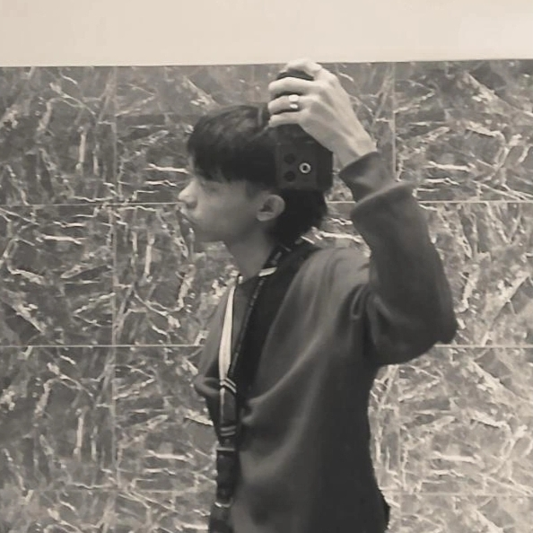

Programming
Writing logic and exploring application development.
JavaPythonJavaScript
Hi, I'm John Harvey Cabrera. I’m an Information Technology student interested in software development, creative technology, and building useful digital experiences.

I’m a fourth-year BS Information Technology student at Central Bicol State University of Agriculture, driven by curiosity and a desire to keep creating.
I enjoy exploring how technology can solve real-world problems. My interests include programming, application development, interface design, and multimedia projects. I also value the creative process—from shaping an idea to turning it into something people can experience.
I’m still learning, experimenting, and discovering where I can make the greatest contribution. For me, progress is built one project and one lesson at a time.
Writing logic and exploring application development.
Building interfaces and learning how applications work.
Turning concepts into clear, engaging visual experiences.
Exploring tools for development, prototyping, and collaboration.
This is a starting skills list. Adjust it to reflect tools and technologies you can confidently discuss.
An Android application for taro leaf disease classification and management, combining image-based detection, severity assessment, and locally stored management recommendations to support taro farmers.
An emergency response platform designed to make emergency assistance more accessible through emergency hotline directories, first aid guidance, and immediate response procedures during disasters.
A learning hub focused on improving ube production in the Philippines by providing accessible agricultural learning resources, production guides, and knowledge to support farmers and other stakeholders.
An online library management system designed to simplify book searching, borrowing, and returning while providing administrators with tools for book management and transaction monitoring.
A multiplayer farming game concept where players grow emotion-themed crops, collect coins, discover mutations, and interact with various in-game systems.
Developed UbeHub, a learning hub designed to improve ube production in the Philippines by providing accessible agricultural learning resources and production guidance.
Developed 2D Go, an emergency response platform designed to connect users with emergency units through hotline directories, first aid guidance, and immediate response procedures during disasters.
Consistently recognized for academic excellence during the first, second, and third years of college.
Recognized for outstanding academic performance in User Interface Designing.
Recognized for outstanding academic performance in Database Management.
Recognized for outstanding academic performance in Computer Networking.
Recognized for outstanding academic performance in System Administration and Maintenance.
13th TOPCIT Examination
December 2025Leadership Development
October 29–30, 2025Turning Curiosity into Code for the Next Generation of Digital Innovators
March 18, 2026Introductory Workshop on UX Design for Students – Part 2
March 21, 202421st Century Tools for Today's Creative Endeavors – DICT Region V
June 20, 2024Data Analytics Philippines
I'm open to conversations, learning opportunities, and collaborations. Feel free to reach out.
Send me an email ↗